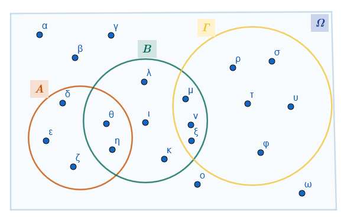

1 Σύνολα
Η θεωρία των συνόλων αποτελεί θεμελιώδη και πρωταρχική έννοια στα Μαθηματικά, καθώς πάνω σε αυτήν βασίζονται σχεδόν όλοι οι υπόλοιποι κλάδοι. Ακολουθεί η ανάλυση των βασικών εννοιών, ορισμών και πράξεων.
1.1 1. Η έννοια του συνόλου
Σύμφωνα με τον μαθηματικό Georg Cantor, ο οποίος θεωρείται ο θεμελιωτής της θεωρίας συνόλων, σύνολο είναι κάθε συλλογή αντικειμένων που προέρχεται από την εμπειρία ή τη διανόησή μας, είναι καλά ορισμένη και τα αντικείμενά της διακρίνονται το ένα από το άλλο.
Τα αντικείμενα που αποτελούν ένα σύνολο ονομάζονται στοιχεία του.
Για να είναι ένα σύνολο «καλά ορισμένο», πρέπει να υπάρχει ένα κριτήριο με το οποίο να μπορούμε να αποφασίσουμε με βεβαιότητα αν ένα αντικείμενο ανήκει ή όχι σε αυτό.
Συνήθως συμβολίζουμε τα σύνολα με κεφαλαία γράμματα (\(A, B, \Omega\)) και τα στοιχεία τους με πεζά (\(a, b, x\)).
Παράδειγμα:
\(Α=\{α, β, γ, δ\}\), \(Μ=\{5,10,15,20, ....\}\)
1.2 2. Τα σύμβολα \(\in\) και \(\notin\)
Τα σύμβολα αυτά δηλώνουν τη σχέση ενός στοιχείου με ένα σύνολο:
- Αν ένα αντικείμενο \(x\) είναι στοιχείο ενός συνόλου \(A\), γράφουμε \(x \in A\) και διαβάζουμε «το \(x\) ανήκει στο \(A\)».
- Αν το \(x\) δεν είναι στοιχείο του συνόλου \(A\), γράφουμε \(x \notin A\) και διαβάζουμε «το \(x\) δεν ανήκει στο \(A\)».
Παράδειγμα: Αν \(Β=\{1,3,5,7,9, .....\}\) και \(Τ=\{ \dfrac{1}{2},\dfrac{1}{3},\dfrac{1}{4},\dfrac{1}{5}, .....\}\)
Τότε \(5\in B\),\(\quad\) \(4 \notin T\),\(\quad\) \(5 \in \mathbb Q\),\(\quad\) \(-3 \notin \mathbb N\),\(\quad\) \(\sqrt{3} \notin \mathbb Q\),\(\quad\) \(\sqrt{3} \in \mathbb R\)
1.3 3. Παράσταση συνόλου
Υπάρχουν τρεις βασικοί τρόποι για να παραστήσουμε ένα σύνολο:
Με αναγραφή των στοιχείων του: Γράφουμε όλα τα στοιχεία του ανάμεσα σε άγκιστρα, χωρίζοντάς τα με κόμματα. Π.χ. \(A = \{1, 2, 3\}\).
Με περιγραφή της ιδιότητας των στοιχείων του: Γράφουμε ανάμεσα σε άγκιστρα μια ιδιότητα που χαρακτηρίζει αποκλειστικά τα στοιχεία του συνόλου. Π.χ. \(B = \{x \in \mathbb{N} \mid x < 5\}\).
Το σύνολο \(A = \{x \in \mathbb{R} \mid x^2 - 7x + 6 = 0\}\) με αναγραφή είναι το \(A = \{1, 6\}\).
Με διάγραμμα Venn: Χρησιμοποιούμε μια κλειστή καμπύλη γραμμή, στο εσωτερικό της οποίας σημειώνουμε τα στοιχεία του συνόλου.
1.4 4. Ίσα σύνολα και Υποσύνολα
Ίσα σύνολα: Δύο σύνολα \(A\) και \(B\) ονομάζονται ίσα (\(A=B\)) αν έχουν ακριβώς τα ίδια στοιχεία.
Υποσύνολο: Ένα σύνολο \(A\) λέγεται υποσύνολο ενός συνόλου \(B\) (\(A \subseteq B\)) αν κάθε στοιχείο του \(A\) είναι και στοιχείο του \(B\).
Γνήσιο υποσύνολο: Το \(A\) είναι γνήσιο υποσύνολο του \(B\) (\(A \subset B\)) αν \(A \subseteq B\) αλλά υπάρχει τουλάχιστον ένα στοιχείο του \(B\) που δεν ανήκει στο \(A\).
Παραδείγματα:
Βασικά Σύνολα Αριθμών: Οι Φυσικοί (\(\mathbb{N}\)), οι Ακέραιοι (\(\mathbb{Z}\)), οι Ρητοί (\(\mathbb{Q}\)) και οι Πραγματικοί (\(\mathbb{R}\)) αριθμοί συνδέονται με τη σχέση εγκλεισμού: \(\mathbb{N} \subseteq \mathbb{Z} \subseteq \mathbb{Q} \subseteq \mathbb{R}\).
Αν \(Α=\{2, 4, 6, ... , 20\}\) και \(Β=\{1, 2, 3, ... , 50\}\) τότε \(Α \subset B\)
Ίσα σύνολα: \(Σ=\{3,5\}\) και \(Τ=\{x \in \mathbb R \mid (x-3)(x-5)=0\)
Από τον ορισμό προκύπτει ότι:
- \(Α \subseteq Α\), για κάθε σύνολο Α.
- Αν \(Α \subseteq Β\) και \(Β \subseteq Γ\), τότε \(Α \subseteq Γ\) .
- Αν \(Α \subseteq Β\) και \(Β \subseteq Α\), τότε \(Α = Β\) .
1.5 5. Το κενό σύνολο (\(\emptyset\) ή \(\{ \}\))
Είναι το μοναδικό σύνολο που δεν περιέχει κανένα στοιχείο.
- Το κενό σύνολο θεωρείται υποσύνολο κάθε συνόλου (\(\emptyset\subseteq A\)).
1.6 6. Διαγράμματα Venn
Είναι μια εποπτική παρουσίαση των συνόλων.
Το βασικό σύνολο \(\Omega\) (ή σύνολο αναφοράς \(U\)), που περιέχει όλα τα στοιχεία που εξετάζουμε σε μια περίπτωση, παριστάνεται συνήθως με το εσωτερικό ενός ορθογωνίου.
Τα υποσύνολα του \(\Omega\) παριστάνονται με κύκλους ή άλλες κλειστές καμπύλες στο εσωτερικό του ορθογωνίου.
Παράδειγμα:

1.7 7. Πράξεις με σύνολα
Έστω \(A\) και \(B\) δύο υποσύνολα ενός βασικού συνόλου \(\Omega\):
Ένωση (\(A \cup B\)): Το σύνολο των στοιχείων που ανήκουν στο \(A\) ή στο \(B\) (τουλάχιστον σε ένα από τα δύο).
Τομή (\(A \cap B\)): Το σύνολο των στοιχείων που ανήκουν και στο \(A\) και στο \(B\) (κοινά στοιχεία). Αν \(A \cap B = \emptyset\), τα σύνολα λέγονται ξένα ή ασυμβίβαστα.
Συμπλήρωμα (\(A'\)): Το σύνολο των στοιχείων του \(\Omega\) που δεν ανήκουν στο \(A\).
Διαφορά (\(A - B\)): Το σύνολο των στοιχείων που ανήκουν στο \(A\) αλλά όχι στο \(B\).
Συμμετρική Διαφορά (\(A \Delta B\) ή \(A \oplus B\)): Το σύνολο των στοιχείων που ανήκουν στην ένωση \(A \cup B\) αλλά όχι στην τομή \(A \cap B\).
Παραδείγματα:
Αν \(A = \{1, 2, 4, 6\}\) και \(B = \{2, 4, 8, 10\}\) με βασικό σύνολο \(\Omega = \{1, 2, \dots, 10\}\), τότε:
- \(A \cup B = \{1, 2, 4, 6, 8, 10\}\).
- \(A \cap B = \{2, 4\}\).
- \(A - B = \{1, 6\}\).
- \(A' = \{3, 5, 7, 8, 9, 10\}\).
- \(A\oplus B=\{1,6,8,10\}\)
1.8 Ασκήσεις
- Συμπληρώστε τον πίνακα με το σύμβολο “\(\checkmark\)” για τους παρακάτω αριθμούς: \[-7, \quad 0,5, \quad \sqrt{5}, \quad \frac{18}{3}, \quad -\sqrt{49}, \quad 1,2\bar{5}, \quad e (\text{σταθερά}), \quad 12\]
| \(-7\) | \(0,5\) | \(\sqrt{5}\) | \(\frac{18}{3}\) | \(-\sqrt{49}\) | \(1,2\bar{5}\) | \(e\) | \(12\) | |
|---|---|---|---|---|---|---|---|---|
| \(\in \mathbb{N}\) | ||||||||
| \(\in \mathbb{Z}\) | ||||||||
| \(\in \mathbb{Q}\) | ||||||||
| \(\in \mathbb{R}\) |
Σημείωση: \(\dfrac{18}{3}=6\) και \(-\sqrt{49}=-7\).
- Έστω \(A = \{x \in \mathbb{N} \mid x \text{ είναι πολλαπλάσιο του } 3 \text{ και } x \leq 15\}\) και \(B = \{x \in \mathbb{N} \mid x \text{ είναι πολλαπλάσιο του } 5 \text{ και } x \leq 15\}\). Να βρείτε τα:
- α) \(A \cup B = \dots\)
- β) \(A \cap B = \dots\)
- Έστω βασικό σύνολο \(\Omega = \{1, 2, 3, 4, 5, 6, 7, 8, 9, 10\}\) και τα υποσύνολά του: \(A = \{x \in \Omega \mid x \text{ είναι περιττός}\}\) και \(B = \{x \in \Omega \mid x \text{ είναι άρτιος}\}\). Τότε:
- α) \(A \cup B = \dots\)
- β) \(A \cap B = \dots\)
- γ) \(A' = \dots\)
- Σε καθεμιά από τις παρακάτω ερωτήσεις να κυκλώσετε τη σωστή απάντηση:
1. Αν ένα στοιχείο \(x\) ανήκει στην τομή των συνόλων \(A\) και \(B\) (\(x \in A \cap B\)), τότε:
- α) \(x \in A\) μόνο
- β) \(x \in B\) μόνο
- γ) \(x \in A\) και \(x \in B\)
- δ) \(x \notin A\)
2. Για οποιαδήποτε σύνολα \(A\) και \(B\), ισχύει πάντα:
- α) \((A \cup B) \subseteq A\)
- β) \(B \subseteq (A \cup B)\)
- γ) \((A \cap B) = (A \cup B)\)
- δ) \(A \subseteq (A \cap B)\)
- Συμπληρώστε τις παρακάτω ισότητες:
1. Έστω \(\Omega\) ένα βασικό σύνολο και \(A\) ένα υποσύνολό του.
- α) \(A \cup A' = \dots\)
- β) \(A \cap A' = \dots\)
- γ) \(A \cup \emptyset = \dots\)
2. Αν γνωρίζουμε ότι \(A \subset B\):
- α) Τι ισούται η διαφορά \(A - B\); (Απάντηση: \(\emptyset\))
- β) Είναι το \(B' \subseteq A'\); (Απάντηση: Ναι)
- Θεωρούμε βασικό σύνολο \(\Omega = \{1, 2, 3, ..., 21\}\). Να παραστήσετε με αναγραφή των στοιχείων τους τα σύνολα:
- \(A = \{x \in \Omega \mid x \text{ άρτιος}\}\) και
- \(B = \{x \in \Omega \mid x \text{ πολλαπλάσιο του 5}\}\).
Να γραφεί με αναγραφή των στοιχείων του το σύνολο \(A = \{x \in \mathbb{R} \mid x^2 - 7x + 6 = 0\}\).
Να γραφεί με αναγραφή των στοιχείων του το σύνολο \(B = \{x \in \mathbb{N} \mid (x^2 - 5x + 6) (x - 1) = 0\}\).
Αν το βασικό σύνολο είναι \(\Omega = \{1, 2, ..., 10\}\), να προσδιορίσετε τα στοιχεία του συνόλου \(A = \{x \in \Omega \mid |x - 4| \le 2\}\).
Να περιγράψετε τις διαδοχικές σχέσεις εγκλεισμού των συνόλων \(\mathbb{N, Z, Q, R}\) χρησιμοποιώντας τα κατάλληλα σύμβολα υποσυνόλου.
Έστω \(A = \{1, 6\}\) και \(B = \{1/2, 1, 2, 6\}\). Να εξετάσετε αν το σύνολο \(A\) είναι υποσύνολο του \(B\).
Δίνεται το σύνολο \(A = \{1, 2, 4, 6\}\). Να γράψετε όλα τα δυνατά υποσύνολα του \(A\) (περιλαμβανομένου του κενού συνόλου και του ίδιου του \(A\)).
Να αποφανθείτε αν οι παρακάτω σχέσεις είναι σωστές ή λάθος και να αιτιολογήσετε:
- α) \(A \subseteq A \cap B\),
- β) \(B \subseteq A \cap B\).
Να εξηγήσετε γιατί οι σχέσεις \(A \cap B \subseteq A\) και \(A \cap B \subseteq B\) είναι πάντα αληθείς.
Έστω βασικό σύνολο \(\Omega = \{1, 2, ..., 10\}\) και τα υποσύνολά του \(A = \{1, 2, 4, 6\}\) και \(B = \{2, 4, 8, 10\}\). Να παραστήσετε τα σύνολα αυτά με ένα διάγραμμα Venn.
Θεωρούμε ως βασικό σύνολο \(\Omega\) τα γράμματα του ελληνικού αλφαβήτου και τα υποσύνολά του \(A = \{x \in \Omega \mid x \text{ φωνήεν}\}\) και \(B = \{x \in \Omega \mid x \text{ σύμφωνο}\}\). Ποιο είναι το αποτέλεσμα της τομής \(A \cap B\) και πώς ονομάζονται τα σύνολα αυτά;
Έστω \(\Omega\) ένα βασικό σύνολο και \(\emptyset\) το κενό σύνολο. Να συμπληρώσετε τις ισότητες:
- α) \(\emptyset' = \dots\) και
- β) \(\Omega' = \dots\).
Να χρησιμοποιήσετε τα διαγράμματα Venn για να τοποθετήσετε τους αριθμούς \(0, 20/5, \pi, -3,5\) και \(100\) στα κατάλληλα πεδία των συνόλων \(\mathbb{N, Z, Q, R}\).
Αν \(A = \{x \in \mathbb{R} \mid x \text{ διαιρέτης του 16}\}\) και \(B = \{x \in \mathbb{R} \mid x \text{ διαιρέτης του 24}\}\), να βρείτε τα σύνολα \(A \cup B\) και \(A \cap B\).
Αν \(\Omega = \{1, 2, ..., 21\}\), \(A\) οι άρτιοι και \(B\) τα πολλαπλάσια του 5, να υπολογίσετε τα σύνολα \(A \cup B, \ \ A \cap B, \ \ A', \ \ B', \ \ (A \cup B)'\) και \(A' \cap B\).
Έστω \(A = \{1, 2, 4, 6\}\) και \(B = \{2, 4, 8, 10\}\). Να περιγράψετε με αναγραφή των στοιχείων του το σύνολο της διαφοράς \(A - B\).
Έστω \(A \subseteq \Omega\). Να εξηγήσετε βάσει του ορισμού του συμπληρωματικού συνόλου γιατί ισχύει η ισότητα \((A')' = A\).
Έστω \(A \subseteq B\). Να συμπληρώσετε τις ισότητες \(A \cap B = \dots\) και \(A \cup B = \dots\) αιτιολογώντας την απάντησή σας.
Έστω \(\Omega\) το ελληνικό αλφάβητο, \(A\) τα φωνήεντα και \(B\) τα σύμφωνα. Να δείξετε ότι \(A \cup B = \Omega, A' = B\) και \(B' = A\).
Σύντομες οδηγίες για την επίλυση: θυμήσου ότι οι ρητοί (\(\mathbb{Q}\)) είναι όλοι οι αριθμοί που γράφονται ως κλάσμα (και οι δεκαδικοί με τέλος ή περιοδικότητα).
η ένωση (\(\cup\)) “ενώνει” όλα τα στοιχεία, ενώ η τομή (\(\cap\)) κρατάει μόνο τα κοινά.
το \(A \cup A'\) μας δίνει πάντα όλο το βασικό σύνολο \(\Omega\), ενώ το \(A \cap A'\) είναι πάντα το κενό σύνολο \(\emptyset\), γιατί ένα στοιχείο δεν μπορεί να ανήκει ταυτόχρονα σε ένα σύνολο και στο συμπλήρωμά του.
ΚΑΛΗ ΜΕΛΕΤΗ!